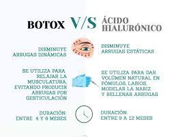

La depilación definitiva consiste en destruir mediante calor las raíces de los pelos para que éstos no vuelvan a crecer. Existen tres sistemas: uno por luz pulsada,otro a través de láser y otro con cera
Dermaplaning es un procedimiento de exfoliación física. De alguna manera, es similar al proceso de afeitar una barba. Se utiliza un bisturí quirúrgico estéril de 10 pulgadas con punta curva para afeitar suavemente la superficie de la piel del rostro (con la excepción de la nariz). si quiere saber mas sobre deermaplaining Que es y para que sirve?
Es un procedimiento no quirúrgico que consiste en inyectar ácido hialurónico en la zona de los labios para obtener un perfilamiento y más volumen.
Tambien realizamos con botox, con una diferencia mas grande respecto al acido de 5000 cada zona
La vacumterapia es un tratamiento no invasivo para combatir la celulitis de primer nivel. Se emplea mediante aparatos seccionadores que drenan el tejido adiposo movilizando la grasa hacia el sistema linfático. Asimismo, la vacumterapia también sirve para eliminar la grasa y disminuir la celulitis, tiene efectos exfoliantes, aporta elasticidad a la piel y relaja la musculatura, se ven cambios a la segunda sesion!
Les dejamos un video de como se realiza: